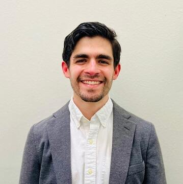

Interested in music cognition and computational modeling of improvisation, rhythm, and meter.

I'm a guitarist and music researcher originally from Caracas, Venezuela. My studies began on piano and violin but quickly turned to the electric guitar after I heard British blues-rock bands like Led Zeppelin and Cream; soon after, John Coltrane's improvisations drew me to jazz, which I went on to pursue seriously in college.
As a performer, I've worked alongside Miguel Zenón, Antonio Sánchez, Dave Holland, and Ran Blake with the New England Conservatory Jazz Orchestra, and I've performed at the Panama Jazz Festival, Denver's Five Points Jazz Festival, and with the National Repertory Orchestra.
As a PhD student at Yale, I'm currently interested in how listeners perceive rhythm, meter, and improvisation, and how those processes can be modeled computationally. In previous research, I focused on complex rhythm and harmonic spaces in contemporary jazz. My doctoral dissertation on guitarist Ben Monder explored how a player can hold to standard jazz forms while significantly diverging from their harmonies in improvisation, and my article “Meter in Contemporary Jazz: A Practitioner-Based Approach” (Revue musicale OICRM, 2025) examines the ways expert musicians negotiate bi-stable metric spaces fluidly and dynamically. I've also presented this work at the AMS/SMT Annual Meeting, Rhythm in Music Since 1900 (McGill), and the UB International Guitar Research Conference.
Before Yale I completed a DMA in Jazz Performance and Pedagogy at the University of Colorado Boulder — where I also taught jazz theory, composition, and arranging — after a master's at the New England Conservatory and a bachelor's at Berklee College of Music.